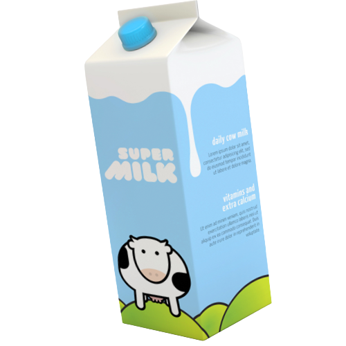

Milks is unwavering in its commitment to delivering unparalleled quality. From the very beginning, the company ensures that the milk it sources from trusted farms is of the highest caliber. Rigorous quality control measures are implemented throughout the entire process, from processing to packaging, guaranteeing that only the finest milk reaches consumers hands. Milks takes pride in providing a product that is synonymous with excellence.


Milks, the renowned dairy company, prides itself on exclusively sourcing and delivering natural, high quality milk. With a commitment to pure goodness, our products are free from additives or artificial flavors. From farm to table, Milks ensures that every drop of milk is a testament to our unwavering dedication to providing wholesome nourishment. Experience the refreshing taste of nature's finest in every sip.
From the collection of fresh milk from partner farms to processing and packaging, Milks employs advanced refrigeration technologies and systems to keep the milk at an appropriate and hazard-free temperature. This helps prevent the growth of bacteria and ensures that the milk reaches consumers in optimal conditions of quality and safety.